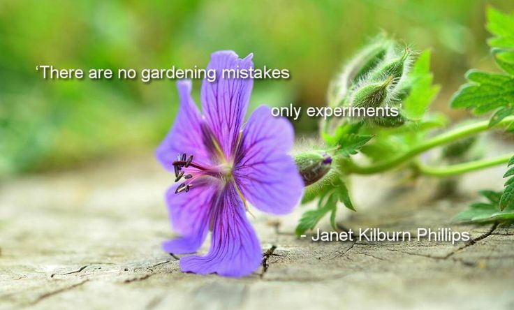
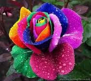
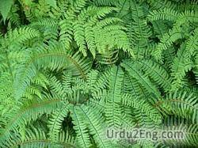

In my garden there are no mistakes only experiments 
| Flowers | Herbs | Fruit | Vegetables |
|---|---|---|---|
| Sunflowers | Rosemary | Strawberries | Beets |
| Daisies | Basil | Raspberries | Cucumbers |
| Wildflowers | Sage | Cherries | Arugula |
A rose is a woody perennial flower plant. There are over 100 species that vary in size shape and color. They are widely grown for their beauty and fragance. Peonies are herbaccous perennial plants. They have compound, deeply lobed leaves and large, often fragrant flowers. Clematis are also known as traveler's joy because they are vigorous, woody, climbing vines. Their leafstalks twist and curl around supporting structues to anchor the plant as it climbs.
Hosta is a genus of plants commonly known as hostas, plantain lilies, and occasionally by the japanese name giboshi. They are widely cultivated as shade tolerant foliage plants.A fern is a member of a group of abot 10,560 known extant species and have neither seeds nor flowers.
The 13 best gardening websites to explode your growing skills.